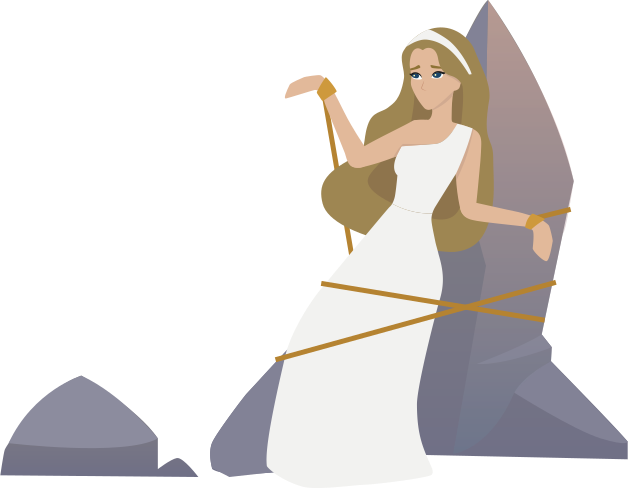
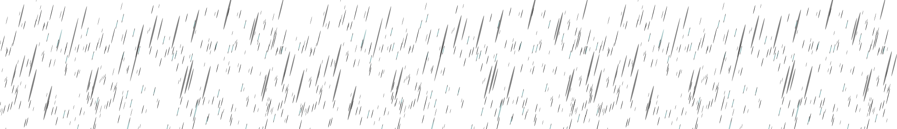
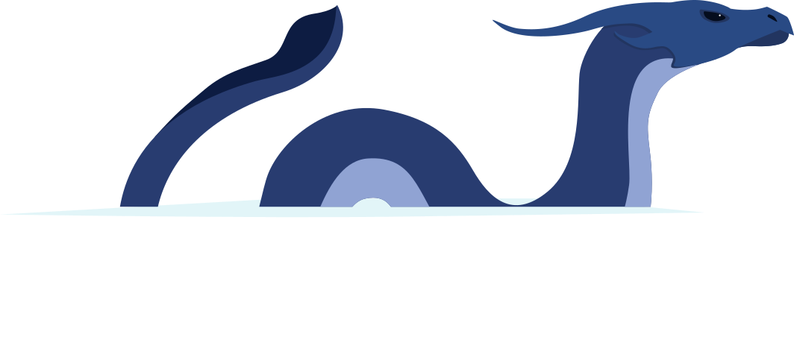
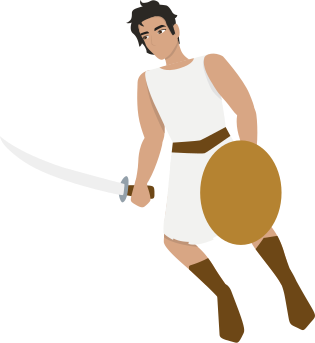

Andrómeda era la hermosa hija de Cefeo y Casiopea, rey y reina de Etiopía. Un día, la reina Casiopea, una mujer de carácter vanidoso y engreído, se atrevió a declarar que su hija era más hermosa incluso que las mismísimas Nereidas, ninfas del mar e hijas del dios Poseidón.

Ofendidas por la osadía de la mortal, las ninfas le exigieron a su padre un castigo para los mortales. Poseidón furioso envió entonces una devastadora inundación sobre la costa, acompañada de un temible monstruo marino llamado Cetus para destruir el reino.
   El rey Cefeo, ante el temor de ver a su pueblo destruido, consultó con el Oráculo de Amón en busca de una solución, pero el Oráculo declaró que la única forma de salvar a su pueblo y calmar la ira de Poseidón era sacrificando a su hija Andrómeda entregándosela al monstruo. Los reyes no tuvieron más opción que encadenar a su hija a las rocas de un acantilado como ofrenda a Cetus.
Nuestro héroe Perseo, hijo del rey Zeus y la mortal Danae, justo
sobrevolaba el reino de Etiopía tras haber cortado la cabeza a Medusa.
Nada más al ver a la hermosa doncella encadenada a las rocas, se
enamoró perdidamente de ella.
Entonces decidió acudir al rey Cefeo y ofrecerse para matar a la
bestia, a cambio de serle entregada como esposa. Su padre acepta.

Perseo entonces utiliza la cabeza de Medusa para convertir en piedra a Cetus y liberar a su amada. En cuanto desencadenó a Andrómeda, volvieron juntos al reino para celebrar su boda. Perseo y Andrómeda se casaron, se establecieron felices en el reino de Tirinto y se convirtieron en padres de siete hijos.